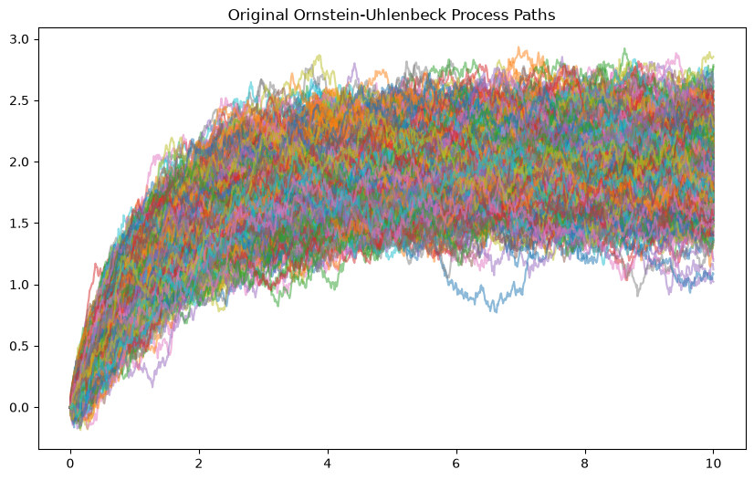
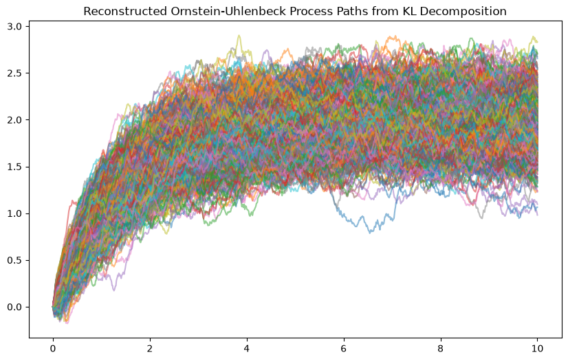
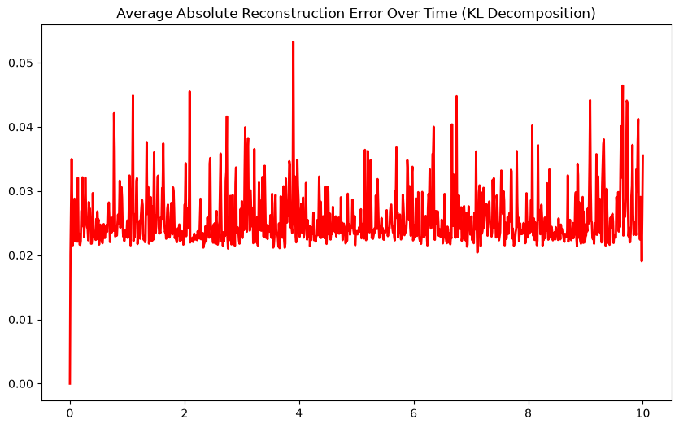
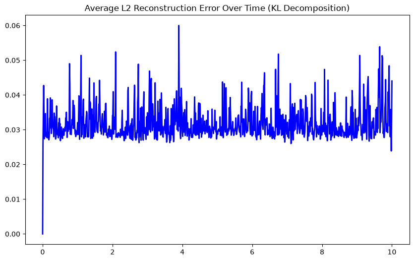
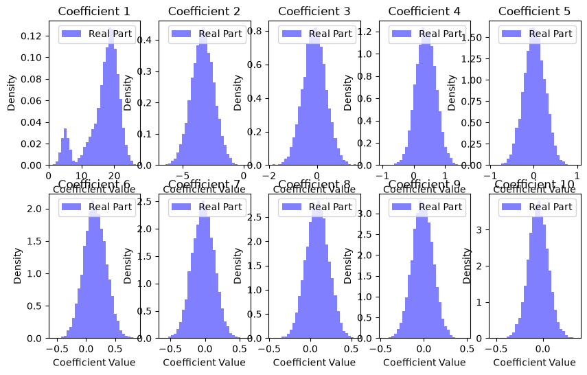

This notebook will contain all the driving code for my honours project including synthetic data generation, real data preprocessing, model training, and evaluation.
from wanderer import*import numpy as npimport matplotlib.pyplot as plt#KL decomposition of the OUP#load the OUP process from jsonOUP_process = StochasticProcess.from_json('OUP_process_EM.json')coeffs, eigenfunctions = KLDecomposition(OUP_process, 100)OUP_reconstructed_process = reconstructFromKL(coeffs, eigenfunctions, OUP_process.timeGrid, OUP_process.timeHorizon)#plot the original pathsplt.figure(figsize=(10, 6))for i inrange(OUP_process.num_paths): plt.plot(OUP_process.timeGrid, OUP_process.paths[i], alpha=0.5)plt.title('Original Ornstein-Uhlenbeck Process Paths')#plot the reconstructed pathsplt.figure(figsize=(10, 6))for i inrange(OUP_reconstructed_process.num_paths): plt.plot(OUP_reconstructed_process.timeGrid, OUP_reconstructed_process.paths[i], alpha=0.5)plt.title('Reconstructed Ornstein-Uhlenbeck Process Paths from KL Decomposition')
Text(0.5, 1.0, 'Reconstructed Ornstein-Uhlenbeck Process Paths from KL Decomposition')


#plot l1 and l2 reconstruction error over timeerrors = np.abs(OUP_reconstructed_process.paths - OUP_process.paths)avg_errors = np.mean(errors, axis=0)#plot the average reconstruction error over timeplt.figure(figsize=(10, 6))plt.plot(OUP_process.timeGrid, avg_errors, color='red', linewidth=2)plt.title('Average Absolute Reconstruction Error Over Time (KL Decomposition)')errors_l2 = np.sqrt(np.mean((OUP_reconstructed_process.paths - OUP_process.paths)**2, axis=0))#plot the average l2 reconstruction error over timeplt.figure(figsize=(10, 6))plt.plot(OUP_process.timeGrid, errors_l2, color='blue', linewidth=2)plt.title('Average L2 Reconstruction Error Over Time (KL Decomposition)')
Text(0.5, 1.0, 'Average L2 Reconstruction Error Over Time (KL Decomposition)')


#slice the OUP process to one year intervals and stack them into a new processsliced_processes = []for i inrange(0, OUP_process.timeHorizon, 1): sliced_processes.append(OUP_process.time_slice(i, i+1))#stack the paths of the sliced processes into a new arrayfor i inrange(len(sliced_processes)):if i ==0: stacked_paths = sliced_processes[i].pathselse: stacked_paths = np.vstack((stacked_paths, sliced_processes[i].paths))#find new time horizonnew_time_horizon =1# create a new process with the stacked pathsnew_process = StochasticProcess(paths=stacked_paths, timeHorizon=new_time_horizon, timeStep=OUP_process.timeStep, method='stacked', num_paths=stacked_paths.shape[0])#print dim of original process and new processprint(f'Original Process Shape: {OUP_process.paths.shape}')print(f'New Process Shape: {new_process.paths.shape}')#derive the KL coefficients of the new processcoeffs, eigenfunctions = KLDecomposition(new_process, 100)
Original Process Shape: (1000, 1001)
New Process Shape: (10000, 100)
#plot the real and imaginary empirical distributions of the first 10 KL coefficients of the new processplt.figure(figsize=(10, 6))for i inrange(10): plt.subplot(2, 5, i+1) plt.hist(coeffs[:, i].real, bins=30, density=True, alpha=0.5, color='blue', label='Real Part')#plt.hist(coeffs[:, i].imag, bins=30, density=True, alpha=0.5, color='orange', label='Imaginary Part') plt.title(f'Coefficient {i+1}') plt.xlabel('Coefficient Value') plt.ylabel('Density') plt.legend()

#plot sliced paths of the new processplt.figure(figsize=(10, 6))for i inrange(new_process.num_paths): plt.plot(new_process.timeGrid, new_process.paths[i], alpha=0.5)plt.title('Sliced Paths of the New Process (1 Year Intervals)')# out of time simulation for a time period of 1 yearout_of_time_simulation = outOfTimeSimulationKL(distributions=coeffs, eigenfunctions = eigenfunctions, time_horizon= new_process.timeHorizon, time_step=new_process.timeStep, num_paths=1000)#plot out of time simulation pathsplt.figure(figsize=(10, 6))for i inrange(out_of_time_simulation.num_paths): plt.plot(out_of_time_simulation.timeGrid, out_of_time_simulation.paths[i], alpha=0.5)plt.title('Out of Time Simulation Paths (1 Year)')
---------------------------------------------------------------------------KeyboardInterrupt Traceback (most recent call last)
CellIn[5], line 2 1#plot sliced paths of the new process----> 2plt.figure(figsize=(10, 6))
3for i inrange(new_process.num_paths):
4 plt.plot(new_process.timeGrid, new_process.paths[i], alpha=0.5)
File <stringsource>:69, in cfunc.to_py.__Pyx_CFunc_b0409f__29_pydevd_sys_monitoring_cython_object__lParen__etc_to_py_4code_4line.wrap()---> 69'Could not get source, probably due dynamically evaluated source code.'File _pydevd_sys_monitoring/_pydevd_sys_monitoring_cython.pyx:1505, in _pydevd_sys_monitoring_cython._line_event()-> 1505'Could not get source, probably due dynamically evaluated source code.'File _pydevd_sys_monitoring/_pydevd_sys_monitoring_cython.pyx:1547, in _pydevd_sys_monitoring_cython._internal_line_event()-> 1547'Could not get source, probably due dynamically evaluated source code.'File _pydevd_sys_monitoring/_pydevd_sys_monitoring_cython.pyx:1348, in _pydevd_sys_monitoring_cython._stop_on_breakpoint()-> 1348'Could not get source, probably due dynamically evaluated source code.'File _pydevd_sys_monitoring/_pydevd_sys_monitoring_cython.pyx:1990, in _pydevd_sys_monitoring_cython._do_wait_suspend()-> 1990'Could not get source, probably due dynamically evaluated source code.'File ~/Documents/Main/School/Uni/2026/W - Project/Notebooks/.venv/lib/python3.14/site-packages/debugpy/_vendored/pydevd/pydevd.py:2234, in PyDB.do_wait_suspend(self, thread, frame, event, arg, exception_type) 2231 from_this_thread.append(frame_custom_thread_id)
2233withself._threads_suspended_single_notification.notify_thread_suspended(thread_id, thread, stop_reason):
-> 2234 keep_suspended = self._do_wait_suspend(thread,frame,event,arg,trace_suspend_type,from_this_thread,frames_tracker) 2236 frames_list = None 2238if keep_suspended:
2239# This means that we should pause again after a set next statement.File ~/Documents/Main/School/Uni/2026/W - Project/Notebooks/.venv/lib/python3.14/site-packages/debugpy/_vendored/pydevd/pydevd.py:2303, in PyDB._do_wait_suspend(self, thread, frame, event, arg, trace_suspend_type, from_this_thread, frames_tracker) 2300 queue.put(internal_cmd)
2301 wait_timeout = TIMEOUT_FAST
-> 2303notify_event.wait(wait_timeout) 2304 notify_event.clear()
2306finally:
File /usr/lib/python3.14/threading.py:670, in Event.wait(self, timeout) 668 signaled = self._flag
669ifnot signaled:
--> 670 signaled = self._cond.wait(timeout) 671return signaled
File /usr/lib/python3.14/threading.py:373, in Condition.wait(self, timeout) 371else:
372if timeout > 0:
--> 373 gotit = waiter.acquire(True,timeout) 374else:
375 gotit = waiter.acquire(False)
KeyboardInterrupt:
#run KL on unslice pathscoeffs_unsliced, eigenfunctions_unsliced = KLDecomposition(OUP_process, 100)#simulate out of time paths using the unsliced KL coefficients and eigenfunctionsout_of_time_simulation_unsliced = outOfTimeSimulationKL(distributions=coeffs_unsliced, eigenfunctions = eigenfunctions_unsliced, time_horizon= OUP_process.timeHorizon, time_step=OUP_process.timeStep, num_paths=100)#plot out of time simulation pathsplt.figure(figsize=(10, 6))for i inrange(out_of_time_simulation_unsliced.num_paths): plt.plot(out_of_time_simulation_unsliced.timeGrid, out_of_time_simulation_unsliced.paths[i], alpha=0.5)plt.title('Out of Time Simulation Paths (Unsliced KL)')
---------------------------------------------------------------------------ValueError Traceback (most recent call last)
CellIn[7], line 5 1#run KL on unslice paths 2 coeffs_unsliced, eigenfunctions_unsliced = KLDecomposition(OUP_process, 100)
3 4#simulate out of time paths using the unsliced KL coefficients and eigenfunctions----> 5 out_of_time_simulation_unsliced = outOfTimeSimulationKL(distributions=coeffs_unsliced, eigenfunctions = eigenfunctions_unsliced, time_horizon= OUP_process.timeHorizon, time_step=OUP_process.timeStep, num_paths=100)
6 7#plot out of time simulation paths 8 plt.figure(figsize=(10, 6))
File ~/Documents/Main/School/Uni/2026/W - Project/Library/wanderer/src/wanderer/Stochastics/KLDecomposition.py:52, in outOfTimeSimulationKL(distributions, eigenfunctions, time_step, time_horizon, num_paths) 49 coeffs = distributions[row, :].reshape(1, -1)
51#reconstruct path from sampled coefficients---> 52simulated_paths[i,:] = reconstructFromKL(coeffs, eigenfunctions, time_grid, time_horizon).paths[0, :]
54#return the simulated paths as a StochasticProcess object 55return StochasticProcess(paths=simulated_paths, timeHorizon=time_horizon, timeStep=time_step, method="KL Simulation", num_paths=num_paths)
ValueError: could not broadcast input array from shape (1001,) into shape (1000,)